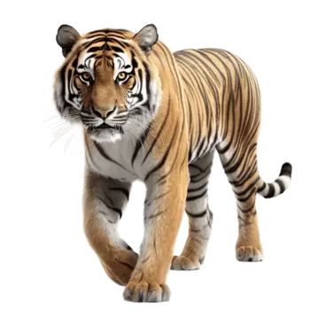

Собаки

- Собачі носи вологі, щоб допомогти ввібрати ароматичні хімікати.
- Ньюфаундленди – дивовижні рятувальники
- Три собаки пережили затоплення Титаніка
Коти

- Коти сплять більше ніж люди. Вони можуть спати від 12 до 16 годин на день!
- Коти дуже чутливі до запахів. Вони можуть розрізняти різні запахи й навіть розпізнавати своїх господарів за запахом.
- Коти можуть здійснювати стрибки в 7 разів довжини свого тіла. Це означає, що якщо ваш кіт важить 4 кг і має довжину тіла 60 см, то він може стрибнути на відстань більше 4 метрів!
Панди
- Панду ще називають – «бамбуковий ведмідь».
- Ця тварина є символом Китаю. У цій країні за вбивство панди передбачена смертна кара.
- Панда витрачає 14-16 годин на день поїдаючи бамбук. Сплять ці тварини 4-6 годин на день. Великі панди не впадають в сплячку, тому що їх дієта бамбука не дозволяють їм зібрати достатньо жирових запасів на зиму.
Коні

- Pіст у холці найменшого коня у світі становив лише 44 з половиною сантиметри.
- У коней чудова пам'ять. Вони можуть запам'ятати кривдника на все життя, але і друзів вони теж не забувають.
- Коні вміють впізнавати інших коней на фотографіях і картинках.
Жирафи

- Малюнок плям кожної жирафи індивідуальний, як і відбиток пальця людини. Цей малюнок формується ще в утробі матері, і народжується малюк уже з плямами.
- Шия жирафи надто коротка, щоби дотягнутися до землі. Унаслідок чого, вона змушена незграбно розчепірювати передні ноги в сторони, щоби попити води. Таке незручне становище робить її вразливою для хижаків.
- Сон жирафи триває всього годину на добу, і брак сну вони компенсують напівдрімотою. Сплять або лежачи, або стоячи, поміщаючи голову між двома гілками, щоби не впасти.
Тигри
- Зіниці у тигрів не вертикальні, а круглі.
- Тигри вміють стрибати на 4-5 метрів у висоту і на 5-6 метрів у довжину.
- Сили щелеп смугастої кішки достатньо, щоб перекусити кістку будь-якї, навіть найбільшої тварини.